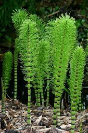

Сучасні хвощеподібні — виключно багаторічні трав'янисті рослини.
Характерною рисою хвощів є почленованість їхніх пагонів. Ця група рослин є нечисельною: відомо усього 30 видів цієї рослини, які належать до єдиного роду — Хвощ.
Оселяються хвощі на кислих ґрунтах. Отже, хвощ польовий є біоіндикатором кислих ґрунтів, оскільки там, де він росте, ґрунт має підвищену кислотність.
Весняні пагони (спорофіт) з'являються ранньою весною і використовують накопичені у кореневищі поживні речовини.
Їх стебло має коричневий колір, оскільки у ньому немає хлорофілу. Стебла мають членисту будову, кожен фрагмент якої завершують лускаті листки.
Навесні на верхівках пагонів з'являються схожі на колоски утворення — спорангії, в яких розвиваються спори. Коли спори дозрівають і висипаються, весняні пагони відмирають.